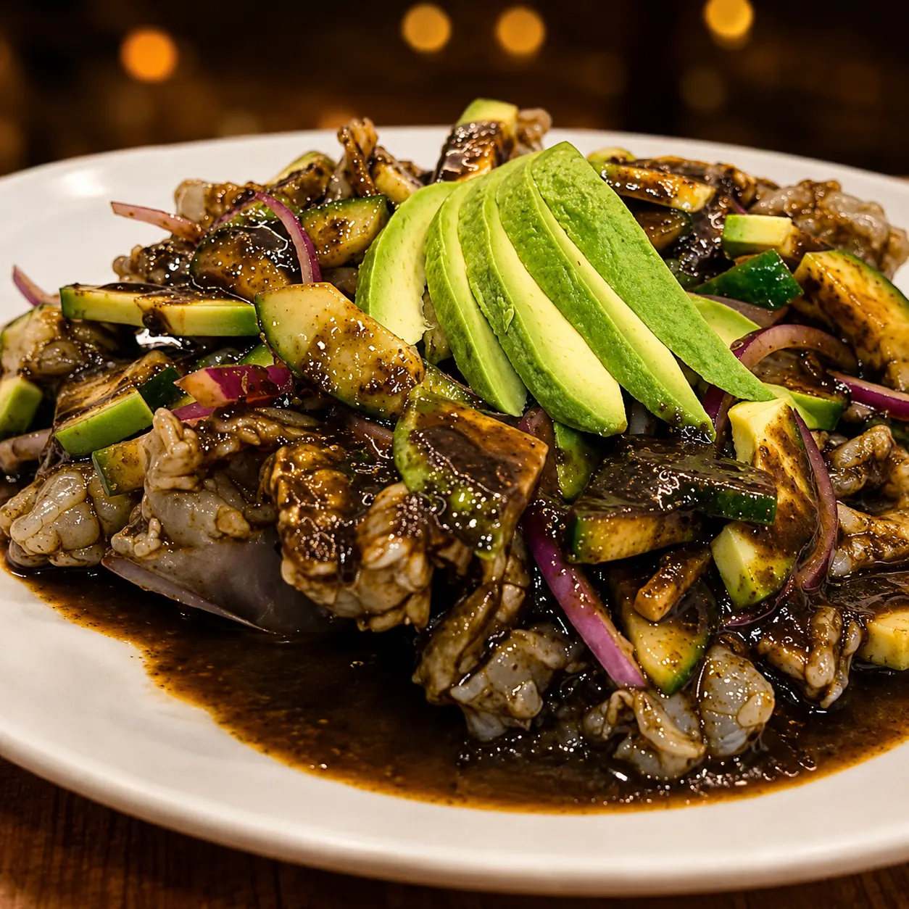

El más picoso

Aguachile negro
Camarón fresco, salsa negra de chiles secos, cebolla morada y pepino. Ahumado, intenso y con el picor más alto de la casa.
½ L $235 · 1 L $380Qué lleva su salsa negra de chiles secos, por qué pica más que el verde y con qué se disfruta mejor. La receta de la casa, contada desde nuestra cocina en Jardines del Cimatario, Querétaro.
Por el equipo de Mariscos Muelle 27 · Recetas de la costa del Pacífico · Actualizado 10 de septiembre de 2026
En resumen: el aguachile negro es la versión más intensa y picosa del aguachile: camarón fresco marinado en una salsa negra de chiles secos que le da color oscuro, aroma ahumado y un sabor profundo. Es el más picante de los tres estilos —verde, negro y de mango—, pero en los aguachiles de Mariscos Muelle 27 lo ajustamos a tu gusto: puedes pedirlo más suave sin que pierda su esencia.
El aguachile negro es un aguachile de camarón crudo marinado en una salsa negra hecha con chiles secos, que le da su color oscuro característico y un sabor ahumado e intenso. Es la versión más atrevida del aguachile: donde el verde es fresco y herbal, el negro es profundo y con carácter.
En Mariscos Muelle 27 es una receta de la casa, pensada para quienes buscan sabores fuertes. Es uno de los tres estilos que preparamos —junto al verde y el de mango— y, con el tiempo, se ha vuelto uno de los favoritos. Si quieres ver las diferencias entre los tres, léelas en nuestra guía de tipos de aguachile.

Camarón fresco, salsa negra de chiles secos, cebolla morada y pepino. Ahumado, intenso y con el picor más alto de la casa.
½ L $235 · 1 L $380La salsa negra se prepara con una combinación de chiles secos seleccionados que le aportan su color oscuro, su aroma ahumado y su sabor intenso, más ingredientes que equilibran el picor y resaltan el sabor del camarón fresco. Es una receta de la casa que busca ofrecer una experiencia distinta a la del aguachile tradicional.
"La salsa negra de nuestro aguachile se prepara con una combinación de chiles secos seleccionados que le dan su característico color oscuro, aroma ahumado y sabor intenso. Es una receta de la casa, con un sabor profundo y lleno de personalidad."
A eso se le suman los frescos de siempre: cebolla morada y pepino, que cortan el picor y aportan textura. Y, como en todos nuestros aguachiles, el protagonista es el camarón fresco, que va crudo y se marina al momento en el limón y la salsa.
El aguachile negro es el más picoso de los tres estilos porque su salsa concentra varios chiles secos, lo que le da un picor superior al del aguachile verde. Es la opción para quien busca sabores fuertes y atrevidos.
Pero el picante no tiene por qué asustarte: lo adaptamos a tu gusto. Si prefieres disfrutar más el sabor que el ardor, lo preparamos en una versión más suave sin que pierda su esencia ahumada.
"Nuestro aguachile negro es el más intenso de los tres estilos. Tiene un nivel de picante superior al verde por la combinación de chiles secos. Pero siempre lo adaptamos: si alguien prefiere el sabor sobre el picante, lo preparamos más suave sin perder su esencia."
El aguachile negro combina perfecto con una cerveza bien fría, una michelada preparada o una bebida refrescante de limón. El ritual de la casa: prueba primero el camarón con un poco de la salsa, y después acompáñalo con pepino, cebolla morada y tostadas para apreciar todos los contrastes.
Es ideal para compartir como entrada, antes de otros platillos de mariscos. Acompáñalo con lo que se te antoje de nuestra carta de bebidas — el frío de la cerveza contra el ahumado del chile es justo lo que lo vuelve adictivo.
Nuestro aguachile negro nació como una propuesta para paladares atrevidos, para quienes buscan sabores más intensos. Está inspirado en la tradición de los mariscos de la costa del Pacífico, pero con un sello propio: lo desarrollamos como una alternativa al clásico aguachile verde.
Con el tiempo se convirtió en uno de los favoritos de nuestros clientes y en uno de los platillos más representativos de Muelle 27. Puedes conocer más de la cocina y la familia detrás del muelle en la página de nuestra historia.
Puedes comer aguachile negro en Mariscos Muelle 27, en Jardín de Alcatraz s/n, Jardines del Cimatario, al sur de Querétaro. Lo servimos por jarra para compartir: media jarra (½ L) $235 y jarra completa (1 L) $380, en la terraza más fresca del sur de la ciudad.
Míralo junto a los otros tres en la carta de aguachiles, o arma tu mesa completa en la marisquería en Querétaro. Abrimos de lunes a domingo, de 9:00 a 18:30.
El más picoso de la casa, camarón fresco del Pacífico y salsa negra ahumada. La terraza más fresca del sur de Querétaro te espera.
Cuéntanos un poco para atenderte mejor.
Estás a un toque de hablar con nosotros al 442 808 5907.